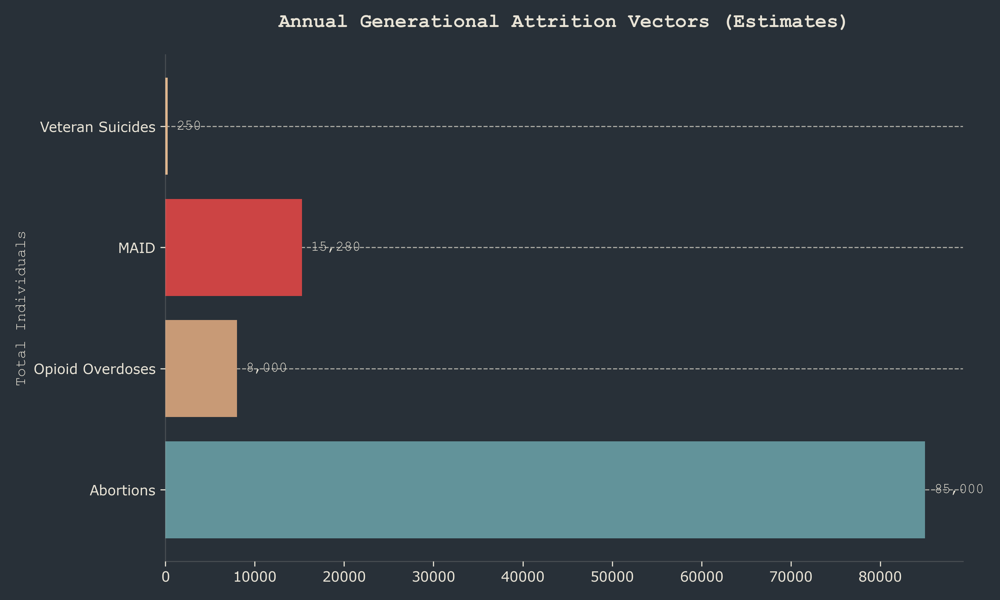
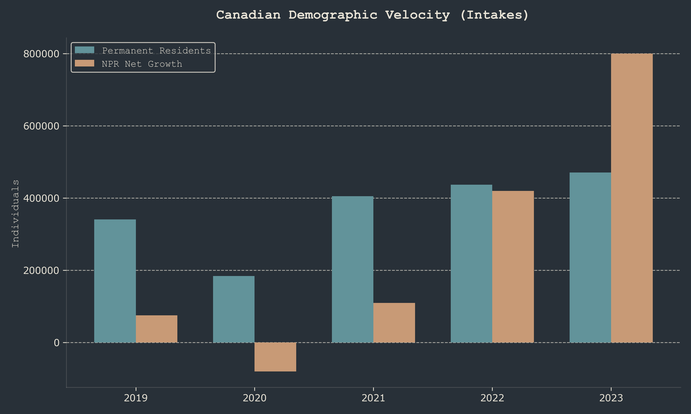
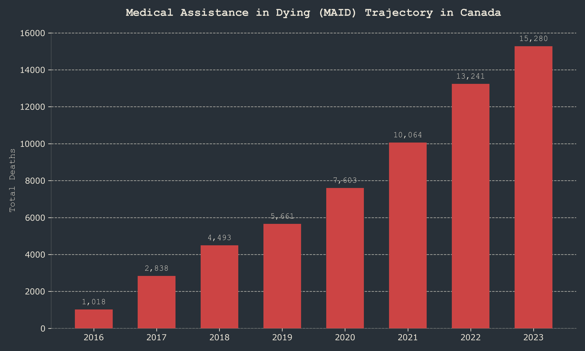

Chart · Poverty
01 · 30%
Track 2 poverty
About one in three Track 2 recipients reviewed reported poverty as a contributing factor. Housing and income offers were minimal or absent.
Housing collapse →ACT IV · Rome Statute Article 6(c)
Article 6(c) prohibits inflicting on the group conditions of life calculated to bring about its physical destruction in whole or in part. Track 2 applicants are disproportionately poor, female, and offered minimal housing or income support before approval for death.

Poverty share, female skew, material-resources and housing quintiles, palliative access gap.

Chart · PovertyAbout one in three Track 2 recipients reviewed reported poverty as a contributing factor. Housing and income offers were minimal or absent.
Housing collapse →
Chart · DemographyOntario Track 2 skews female, poor, and isolated — the profile most exposed to housing crisis and gendered poverty.
Demographic board →
Chart · QuintilesOver-representation in lowest material-resources and highest residential-instability quintiles vs 20% baseline — Marginalization Data Perspectives (MDRC).
Ontario MAID page →Fewer than three in ten who could benefit receive palliative care — while MAID grows double-digit every year since 2016.
CIHI palliative → Elements →Film is memorial tone. Article 6(c) is argued from MDRC vulnerability and marginalization data, housing and poverty shares, and palliative access set against rising MAID volume.
Every document below is a sourced file on this site and part of the record for this act. LIRIL can read any of them to you.